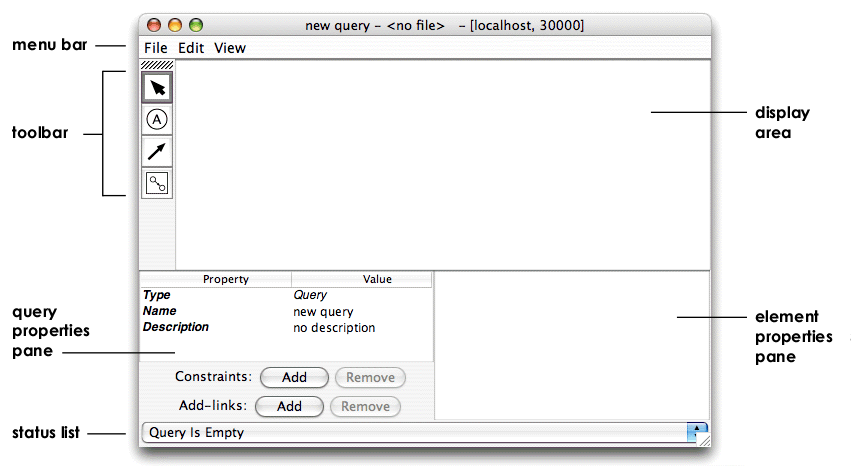

The ProxWebKB database contains objects and links corresponding to web pages and the links between them. Each object has a pagetype attribute that identifies whether the page belongs to or describes a student, faculty member, staff member, research project, course, or something else (other).
The following exercise steps through the process of creating a simple query using the Query Editor. The query finds all the research project pages in the database along with the pages directly linked to that research project page. Each successful match of the query identifies a portion of the database that matches this structure. Because a Proximity database can be represented as a large graph, a match is represented as a subgraph.
Exercise 5.1. Creating a first Proximity query:
The query created in this exercise is also available in the
Proximity 4.3 distribution in
$PROX_HOME/doc/user/tutorial/examples/research-clusters1.qg2.xml.
Before beginning, make sure that you are serving the ProxWebKB database using Mserver. Start the Proximity Database Browser if it is not already running.
-
If you plan to execute any of the saved queries in
$PROX_HOME/doc/user/tutorial/examples, copygraph-query.dtdfrom$PROX_HOME/resourcesto the directory containing the example queries.>
cp $PROX_HOME/resources/graph-query.dtd $PROX_HOME/doc/user/tutorial/examples/ -
From the Query menu, choose New Query. Proximity starts the Query Editor.
 The Query Editor includes two properties panes at the bottom of the window. The query properties pane displays properties of the query as a whole. The element properties pane displays the properties of the selected query element. The element properties pane is blank when no query element is selected.
-
Click
 or press Ctrl-2
to choose the vertex tool.
Tool selection is persistent; the vertex tool remains selected until
you choose another tool.
or press Ctrl-2
to choose the vertex tool.
Tool selection is persistent; the vertex tool remains selected until
you choose another tool.
![[Tip]](images/tip.png)
Use keyboard shortcuts to change the Query Editor selection mode. You can open, close, save, and run queries, select tools, and select query elements using keyboard shortcuts. Keyboard shortcuts are shown next to the corresponding command in the Query Editor’s menus; a summary of the tool selection shortcuts is shown below:
Ctrl-1 Choose the selection tool Ctrl-2 Choose the vertex tool Ctrl-3 Choose the edge tool Ctrl-4 Choose the subquery tool A complete list of keyboard shortcuts for the Query Editor is included in Appendix A, Proximity Quick Reference.
Click in the Query Editor display area. The Query Editor creates a new vertex.

-
Click
 or press Ctrl-1
to choose the selection tool.
Click the vertex you just created to select it.
The Query Editor selects the vertex and displays the vertex’s
properties in the element properties pane.
or press Ctrl-1
to choose the selection tool.
Click the vertex you just created to select it.
The Query Editor selects the vertex and displays the vertex’s
properties in the element properties pane.

To rearrange a query’s layout, use the selection tool to drag vertices inside the display area.
-
In the element properties pane, double-click the vertex name (currently “Vertex1”) to edit its value. Enter
start_pageand press Tab.
Vertex and edge names are used for your convenience in creating the query, in understanding and using query results, and for identifying subgraph elements in learning and applying models. Although we may label query elements with names that remind us of specific attribute values, these names have no effect on how query elements match different database elements.
Double-click a vertex or edge in the Query Editor display area to edit the corresponding label.
Other vertex properties—annotations and conditions—are optional mechanisms for restricting matches in the database. Conditions restrict matches to those entities (objects or links) that match specified attribute values. In this exercise, you specify a condition for one of the vertices. Numeric annotations are covered in the next example.
-
Double-click in the (currently blank) value column of the Condition property to edit its value. Enter
pagetype = ResearchProjectand press Tab. Attribute names and values containing spaces must be surrounded by single quotes. Spaces surrounding the “=” sign are not significant.

Proximity supports two types of conditions:
-
Attribute value conditions compare the value of an object’s or link’s attribute with a specified value.
-
Existence conditions merely check to see whether an object or link has any value for the specified attribute.
Both of these types of conditions are described more formally, below.
-
-
Create a second vertex labeled
linked_page. Because we don’t want to restrict the kinds of pages linked to research project pages, do not enter a condition for this vertex. -
Click or press Ctrl-3 to choose the edge tool. Drag the mouse from start_page to linked_page.

The Query Editor creates a new, directed edge connecting the first vertex to the second vertex.
To create a “loop” edge (an edge connecting a vertex back to itself), choose the edge tool and click the target vertex without dragging.

-
Choose the selection tool and click the new edge to edit its properties. The Query Editor selects the edge and displays the edge’s properties in the element properties pane. Enter
linked_tofor the edge’s label. -
Double-click in the value column of the edge’s Is Directed property to change this value. Enter
falseand press Tab. For this example, we don’t care about the direction of matching links. -
In the query properties pane, double-click in the value column of the query’s Name property to edit its value (currently “new query”). Enter
research-clusters1and press Tab. -
Enter a description for the query and press Tab. This query finds pages connected to research project pages.
-
Check the status list at the bottom of the Query Editor window to make sure your completed query is valid.
Proximity checks to make sure that the query obeys the syntactic requirements of the DTD. No semantic checking is performed. Specifically, validation does not check whether attribute names correspond to actual database entities. If a query is invalid, the status list shows the number of errors and provides a list of the errors in the query.
-
From the File menu, choose Save As to save your query. Save the query as
rc1.qg2.xmlin the$PROX_HOME/doc/user/tutorial/examplesdirectory.![[Caution]](images/caution.png)
The Proximity distribution includes this query in the file
$PROX_HOME/doc/user/tutorial/examples/research-clusters1.qg2.xml. Be careful not to overwrite this file.The Query Editor also saves basic layout information for the query so that it will be displayed as shown when you next open the query in the Query Editor. If you prefer a different arrangement, you can rearrange the query by dragging vertices and saving the query again. If the query was invalid when saved, the Query Editor attempts to read and display the query; however, some errors may result in the query being partially or incorrectly displayed.
-
From the File menu, choose Run or press Ctrl-R to execute your query.
Proximity prompts you for a name for the results container. Enter
research-clusters1and click OK.If the database already includes a container with this name, Proximity asks whether you want to delete the existing container. Answering yes lets Proximity overwrite the contents of this container. This also deletes any containers inside the existing container.
Proximity opens a window to show you a trace of the query execution. The last lines should be similar to the following excerpt (leading information showing elapsed time and execution thread has been omitted from the trace for brevity):
INFO kdl.prox.qgraph2.QueryGraph2CompOp - -> found 1294 subgraphs INFO kdl.prox.qgraph2.QueryGraph2CompOp - -> query results saved in container: research-clusters1 INFO kdl.prox.qgraph2.QueryGraph2CompOp - * query: done Status: finished running query
Close the trace window after the query finishes.
The next section describes how to view the results of your query.